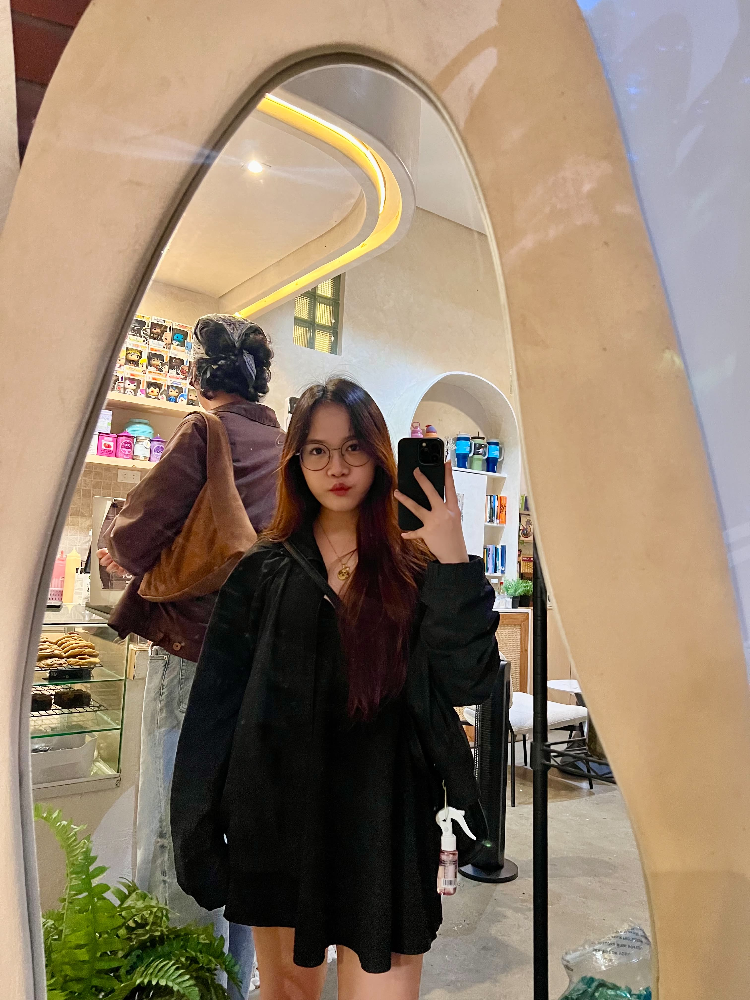

Hi, Baby Julie ❤️
I made this little place just for you.

For You, Julie
💗Hi baby Julie,
I don't really know how to explain everything I'm feeling right now, but I know one thing... I miss you.
Even after spending time with you, somehow my heart still wants more time with you. I keep remembering the little things, your smile, the way you act, the way you hold my hand, and all those tiny moments that probably seem simple, but mean so much to me.
I honestly didn't expect myself to fall this hard. But here I am, thinking about you again and again, smiling at my phone like an idiot whenever I remember you.
I just want you to know that I'm really thankful that God allowed our paths to meet.
You became someone very special to my heart. ❤️
I don't want to rush anything. I just want to keep getting to know you, keep making memories with you, keep making you smile, and hopefully become someone who makes your days a little brighter.
So if you ever wonder whether I still think about you... the answer is probably yes.
Actually... more than you probably realize.
“Above all, love each other deeply, because love covers over a multitude of sins.”
— 1 Peter 4:8I hope today treats you gently, baby. And if it doesn't, remember that somewhere, there's someone who is always cheering for you. ❤️
Always thinking of you,
James 🤍
there's something hidden here...